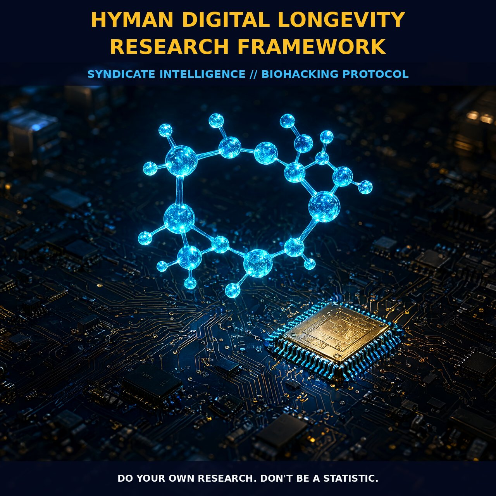

Reclassifying Aging: The Hyman Digital Longevity Framework

1. The Mechanism: From Chronological Decline to Treatable Pathology
The foundational shift in modern longevity medicine is the reclassification of aging from an inevitable chronological decline to a treatable disease state driven by identifiable cellular hallmarks. This framework transcends traditional age management, which relied heavily on hormone replacement therapy (HRT), by targeting the underlying biological mechanisms that precipitate degenerative diseases. By recognizing that the cellular drivers of aging are largely identical to those of major age-related pathologies, researchers can apply anti-aging therapeutics directly to slow or reverse biological aging.
This approach treats biological age as a quantifiable outcome rather than a passive result of time, allowing for precise measurement and intervention. The integration of applied artificial intelligence accelerates this process by identifying complex patterns in genomic data and environmental interactions that contribute to genetic damage accumulation. Consequently, longevity medicine is evolving from experimental theory into clinical practice, supported by significant venture capital investment and validation from institutions like the Buck Institute and Calico Labs.
2. Biological Leverage: Modulating Inflammaging and Endocrine Signaling
The core of the Hyman Digital Longevity Research Framework lies in the ability to modulate inflammation and maintain hormonal balance as primary levers for reversing biological age. Reducing what is termed "inflammaging" provides a critical buffer against cellular degradation, preserving tissue integrity and metabolic function over time. Simultaneously, keeping hormones within optimal ranges supports the endocrine signaling necessary for cellular repair and regeneration.
These two factors work in concert to create an internal environment that favors youthfulness at a molecular level, rather than simply resisting symptoms. Advancements in measuring biological age have been pivotal in validating these interventions, providing concrete data on whether treatments are truly working. Studies demonstrate that it is possible not just to look younger but to literally turn back the biological age clock. The convergence of open data sharing and rigorous research methods effectively filters out noise, leaving behind interventions with substantial biological leverage.
3. Tactical Implementation: Systems Biology and Dosing Precision
To operationalize this framework, individuals must prioritize daily habits that reduce biological age while remaining open to emerging therapeutics. There is no single magic pill, but rather a compounding effect of consistent lifestyle choices and targeted interventions. Tracking progress through measurable biomarkers allows for precise adjustments to diet, supplementation, and activity levels based on real-time data.
Dosing and protocol implementation should be viewed through the lens of individual biological age rather than chronological age alone. By adopting a systems biology perspective, one can navigate the complexities of anti-aging products with confidence, focusing on those with clear mechanistic support. This proactive stance ensures that as new anti-aging compounds enter the pipeline, individuals are physiologically prepared to benefit from them, creating a robust ecosystem for long-term biological optimization.
4. Prostar Life Hack
Don't treat your chronological age; treat your biological age. Prioritize continuous glucose monitoring and inflammatory markers (like hs-CRP) over standard cholesterol panels to guide your supplementation and dietary choices. Invest in diagnostics that reveal your cellular health status, allowing you to tailor interventions with precision rather than relying on generalized protocols.
Prostar Life Hack
Don't treat your chronological age; treat your biological age. Prioritize continuous glucose monitoring and inflammatory markers (like hs-CRP) over standard cholesterol panels to guide your supplementation and dietary choices. Invest in diagnostics that reveal your cellular health status, allowing you to tailor interventions with precision rather than relying on generalized protocols.
[ AUTHOR: LEAD TECHNICAL RESEARCHER ]
[FRESH ON CHAIN: 958c8c246101a353... ]